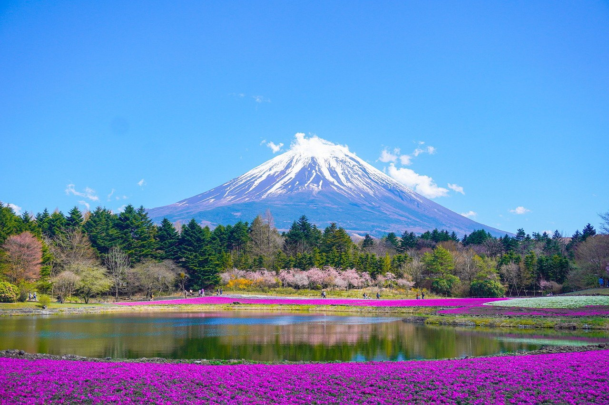

×

Places to Visit in Japan

Tokyo Tower: A symbol of Japan, offering stunning views of the city.

Mount Fuji: Japan's iconic peak and a UNESCO World Heritage site.

Akihabara: Known as the electronics and otaku culture hub of Tokyo.